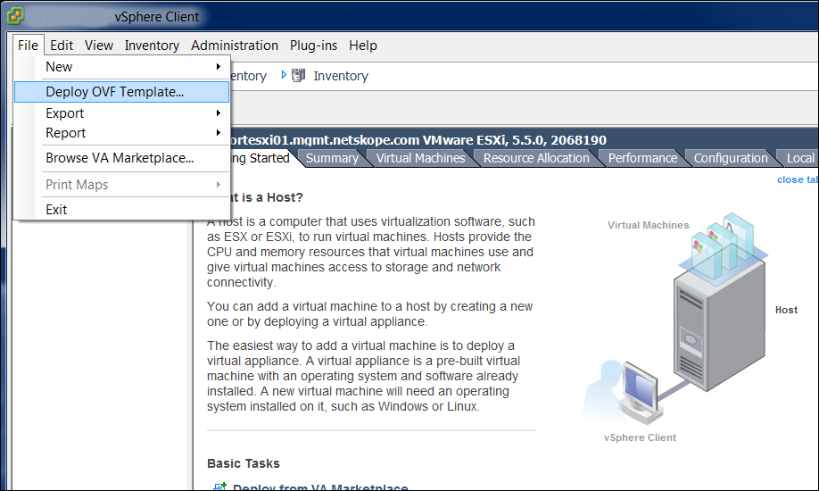
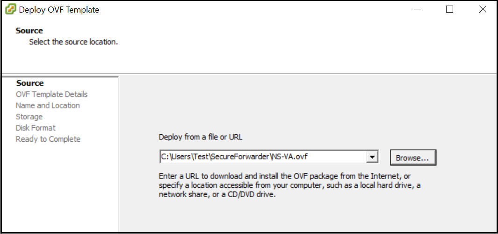
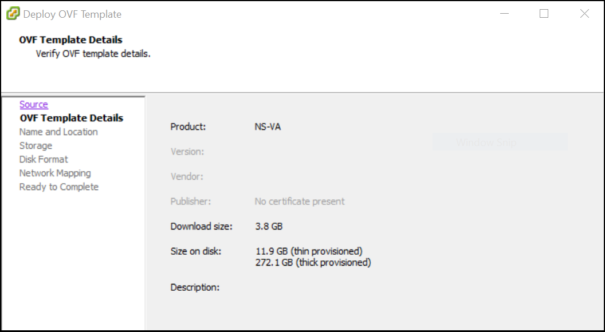
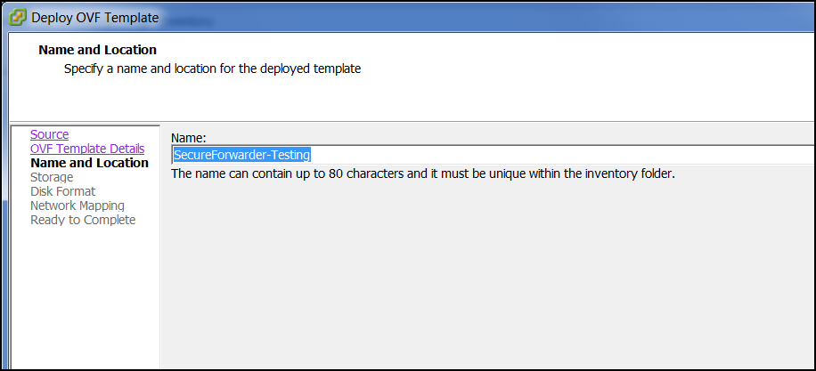
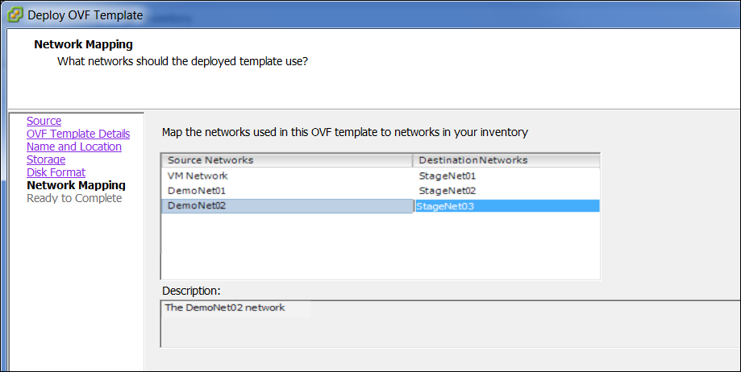
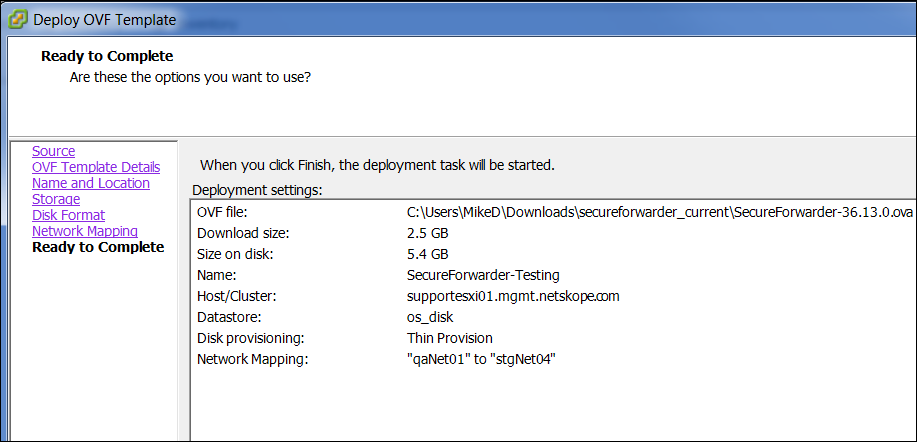

Install the Virtual Appliance on VMware ESX 6.5 or later
Download the Netskope ESX OVA zip file from the Netskope UI (Settings > Security Cloud Platform > On-Premises Infrastructure).
Unzip the file. The folder contains an OVF file, VMDK file, and the md5sum values of the OVF and VMDK files.
Note
Before installing the appliance, you must verify that,
the OVF and VMDK files are present in the same folder.
the checksum of the OVF file matches the md5sum value in the OVF md5sum text file.
the checksum of the VMDF file matches the md5sum value in the VMDF md5sum text file.
Prerequisites
The following are the system requirements:
32 GB RAM
297 GB of HDD
8 cores
To install the VMware Open Virtual Appliance (OVA) using the vSphere client:
Log into vCenter.
When logged in, go to File > OVF Template.
 Click Browse and locate the .ovf file, and then click Open and then Next. Click Browse and locate the .ovf file, and then click Open and Next.
 Review the details and ensure the proper OVA has been selected, and then click Next.
 Give the Log Parser VA a unique name and click Next.
 Select a storage location and click Next.

Select the appropriate data store, change disk format to Thin Provision, and click Next.

Map the Network Adapter to the appropriate network for your given infrastructure and click Next.
Network Adapter 1 (or eth0) is the egress/proxy interface that is called dp2 in the VA.
Network Adapter 2 (or eth1) is the client side interface that is called dp1.
Network Adapter 3 (or eth2) is the management interface.
 Validate the configuration and click Finish to deploy it.

The appliance is configured to use DHCP on the default dp2 interface. Depending on your use case, you can choose to configure a static IP on dp2 and configure additional interfaces. For more information, see Configure the Interfaces.